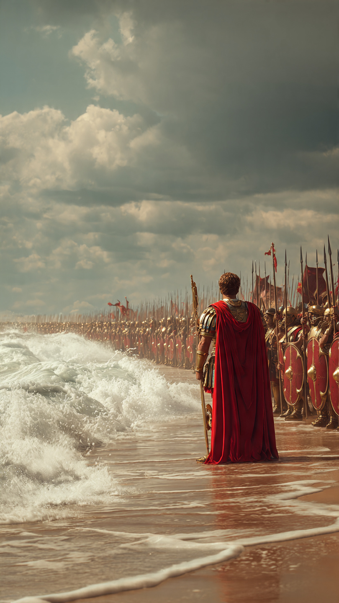

```html id="t3v5cx"
الإمبراطور الذي أعلن الحرب على البحر | قصص تاريخية
```
عبر التاريخ، اشتهر كثير من القادة بإعلان الحروب على جيوش أو ممالك.
لكن أحد أباطرة روما ارتبط اسمه بقصة تبدو غريبة للغاية.
قصة تقول إنه أعلن الحرب على البحر نفسه.
وكان ذلك الإمبراطور هو كاليغولا، الذي حكم الإمبراطورية الرومانية بين عامي 37 و41 ميلادية.
اشتهر كاليغولا بشخصيته المثيرة للجدل، وقد نقل المؤرخون القدماء عنه العديد من الروايات الغريبة.
ومن أشهرها أنه قاد جيشه إلى ساحل بحر الشمال استعدادًا لحملة عسكرية.
لكن بدلًا من عبور البحر، أصدر أوامر غير متوقعة.
فقد طلب من جنوده أن يتجهوا نحو الأمواج، ثم يجمعوا الأصداف من الشاطئ.
ووصفت بعض المصادر هذه الأصداف بأنها "غنائم من البحر".
ولهذا انتشرت الرواية التي تقول إنه أعلن الحرب على البحر وانتصر عليه.
لكن المؤرخين المعاصرين ينظرون إلى هذه القصة بحذر.
فمعظم التفاصيل جاءت من مؤرخين كتبوا بعد وفاة كاليغولا بسنوات، وكان بعضهم شديد الانتقاد له.
ولذلك يصعب التأكد من أن الأحداث وقعت بالطريقة التي رُويت بها.
ويرى بعض الباحثين أن القصة ربما تعرضت للمبالغة أو التحريف مع مرور الزمن.
وهناك تفسير آخر يطرحه عدد من المؤرخين.
فقد يكون جمع الأصداف كان رمزًا للاحتفال بانتهاء حملة عسكرية، أو تدريبًا للقوات، أو تنفيذًا لطقس معين، وليس إعلانًا حقيقيًا للحرب على البحر.
لكن غياب الأدلة القاطعة جعل القصة تبقى واحدة من أكثر الروايات غرابة في تاريخ الإمبراطورية الرومانية.
فهل كان كاليغولا بالفعل إمبراطورًا مجنونًا كما تصفه بعض المصادر؟
أم أن خصومه بالغوا في وصف أفعاله بعد وفاته؟
هذا ما سنعرفه في الجزء الثاني.
📷 الصورة رقم 1

بعد اغتيال كاليغولا عام 41 ميلادية، بدأت تُكتب عنه روايات كثيرة.
وكان أشهر من كتبوا عنه مؤرخون رومانيون مثل سويتونيوس وكاسيوس ديو.
وقد وصفوه بأنه كان يتصرف أحيانًا بطريقة غير متوقعة، ورووا عنه قصصًا أثارت دهشة الناس عبر القرون.
لكن المؤرخين في العصر الحديث يشيرون إلى أن هذه المصادر كُتبت بعد وفاته، وربما تأثرت بالموقف السياسي من حكمه.
ولهذا يجب التعامل مع بعض الروايات بحذر.
ومن القصص المشهورة أيضًا أن كاليغولا كان يخطط لحملة على بريطانيا.
ويرى بعض الباحثين أن الحملة توقفت لأسباب عسكرية أو لوجستية، ثم تحولت مع مرور الزمن إلى الرواية الشهيرة عن "الحرب على البحر".
كما يعتقد آخرون أن أمر جمع الأصداف قد يكون كان وسيلة رمزية للاحتفال أو لتسجيل نهاية المهمة، وليس تصرفًا ناتجًا عن الجنون كما صوّرته بعض الكتب القديمة.
ومهما يكن التفسير الصحيح، فإن عهد كاليغولا لم يدم طويلًا.
فقد استمر حكمه أقل من أربع سنوات، وشهد توترات سياسية وصراعات داخل القصر الإمبراطوري.
وفي النهاية، اغتيل على يد مجموعة من أفراد الحرس الإمبراطوري، وتولى الحكم بعده الإمبراطور كلوديوس.
وبذلك انتهى أحد أكثر العهود إثارة للجدل في تاريخ روما.
ولا يزال الباحثون حتى اليوم يناقشون شخصية كاليغولا.
فبعضهم يرى أنه كان حاكمًا مستبدًا ارتكب أخطاءً كبيرة.
بينما يرى آخرون أن جزءًا من صورته السلبية قد يكون نتيجة مبالغات كتبها خصومه بعد وفاته.
ولهذا تبقى الحقيقة الكاملة موضع نقاش بين المؤرخين.
لكن...
لماذا ما زالت قصة "الحرب على البحر" تُروى حتى اليوم؟
وما الذي تعلمنا إياه عن قراءة المصادر التاريخية؟
هذا ما سنعرفه في الجزء الثالث والأخير.
📷 الصورة رقم 2
بعد مرور ما يقرب من ألفي عام، ما زالت قصة كاليغولا والحرب على البحر تُذكر في الكتب والبرامج الوثائقية، ليس لأنها مؤكدة بالكامل، بل لأنها تبيّن كيف يمكن أن تختلف الروايات التاريخية باختلاف مصادرها.
فالتاريخ لا يعتمد على قصة واحدة، بل على مقارنة الشهادات والوثائق والأدلة الأثرية للوصول إلى أقرب صورة ممكنة للحقيقة.
ولهذا يحرص المؤرخون على التمييز بين ما تؤيده الأدلة بقوة، وما يبقى مجرد رواية تحتاج إلى مزيد من التحقق.
ويُعد كاليغولا واحدًا من أكثر أباطرة روما إثارة للجدل.
فقد جمع اسمه بين السلطة المطلقة، والصراعات السياسية، والروايات التي يصعب التأكد من صحتها بالكامل.
ولهذا تختلف آراء الباحثين حول شخصيته، بينما يتفقون على أن عصره كان فترة مضطربة في تاريخ الإمبراطورية الرومانية.
وتُذكرنا هذه القصة بأهمية قراءة التاريخ بعقل ناقد.
فليس كل ما ورد في المصادر القديمة يُعد حقيقة مؤكدة، خاصة عندما تكون معظم الروايات قد كُتبت بعد الأحداث بسنوات طويلة.
ولهذا يعتمد المؤرخون اليوم على مقارنة النصوص القديمة بالاكتشافات الأثرية والدراسات الحديثة قبل الوصول إلى استنتاجات نهائية.
وهكذا، سواء كانت قصة "الحرب على البحر" قد حدثت كما رُويت أو تعرضت للمبالغة، فإنها بقيت واحدة من أشهر القصص المرتبطة بتاريخ روما القديمة.
وهي تذكير بأن التاريخ مليء بالأحداث الغريبة، لكنه يحتاج دائمًا إلى البحث والتدقيق لفهم ما حدث بالفعل، بعيدًا عن الأساطير والمبالغات.
🏛️🌊 انتهت القصة 🌊🏛️